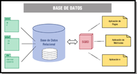

Ada acaba de echar un vistazo al trabajo de María y está muy contenta, pero le recuerda a María que ahora sólo quiere un informe tratando el tema de forma general. Más adelante, a medida que vayamos estudiando los ERP, seremos más concretos. De momento le puntualiza que, además de los puntos que le pidió anteriormente, quiere también que trate su arquitectura, es decir como están diseñados estos sistemas y que recursos necesitan para su puesta en marcha.
Ministerio de Educación y Formación Profesional (Elaboración propia)(Uso educativo no comercial)
Los dos elementos técnicos más importantes en la estructura ERP-CRM son una base de datos relacional y una arquitectura cliente-servidor.
Las arquitectura cliente-servidor se utiliza para operar con los servicios del sistema. Este arquitectura consiste en que los clientes solicitan servicios al servidor cuando no pueden realizarlos por sí mismos, como por ejemplo acceso a los datos de un repositorio o base de datos.
Los clientes se comunicarán con el servidor mediante red corporativa o Internet, solicitando, principalmente, consultas a la base de datos. El servidor o servidores realizarán funciones de administración de periféricos y control de acceso a la base de datos compartida.
El modelo relacional es el más utilizado en los sistemas gestores de bases de datos, respondiendo al requerimiento de cada una de las aplicaciones que desean, revisar, actualizar o eliminar los datos que tienen almacenados.
En cualquier caso, gracias al sistema ERP, el módulo de CRM que lo compone permite a una empresa averiguar los servicios y productos que requieren sus clientes para poder proveerlos, optimizando y mejorando las estrategias en los canales de entrega.
Para saber más
Te proponemos el siguiente enlace con un interesante artículo sobre la arquitectura cliente-servidor.